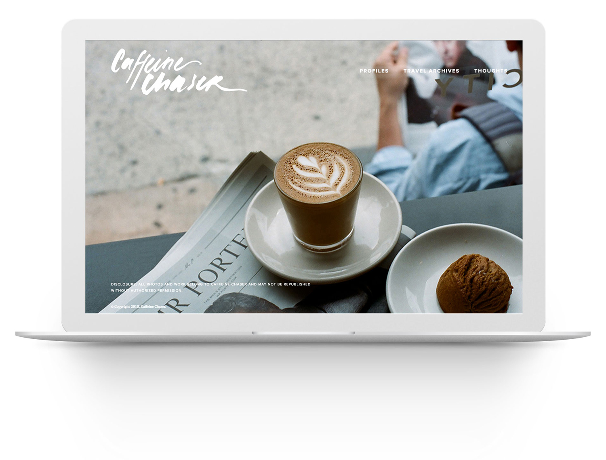

Caffeine Chaser
Client
Caffeine Chaser
Process
3 weeks for research, ideation, sketches, design
Tools
Illustrator, brush pen, black ink



sketches & vectors
I started by sketching and playing around with brushes and black ink, rewriting the letters and words a hundred different ways, trying out different things and see what could work.


I vectorized everything and mixed and matched different parts. I tried editing the letter forms on the computer, but found that doing so made the lines too smooth. I liked the original roughness of the brush stroke edges. I combined the vector pieces in different ways, and presented these final options to the client. We both decided to go with option #5 because it had a nice fluid elegance.
favicon
I went through the same process for the favicon. After mixing and matching different C's, I found that using identical C's created a more impactful and strong icon than using two different C's. The client and I both gravitated towards option #4 because of its simple compact roundness and heaviness.